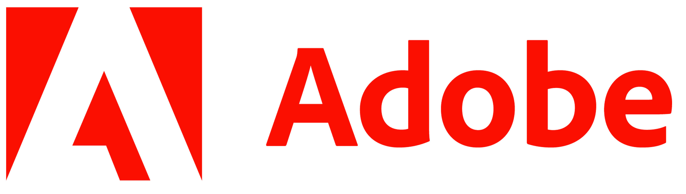
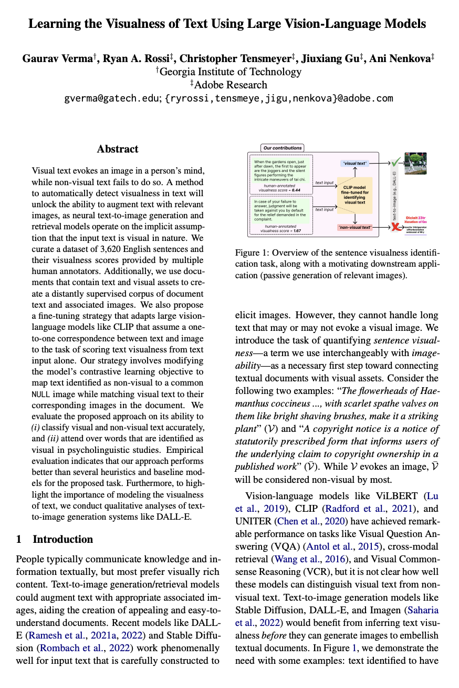

[ Paper @ WACV2024 ]
Md Mehrab Tanjim1, Krishna Kumar Singh1, Kushal Kafle1, Ritwik Sinha1, and Garisson W. Cottrell2
1Adobe Research, 2UCSD


⭐ Our paper has been accepted at WACV 2024 [Reproduction by others]
|
Overview of the sentence visualness identification task, along with a motivating downstream application – image-to-text generation systems like DALL-E can be passively triggered for sentences identified as visual (in this example, the sentence about Tai chi), while skipping generation for non-visual text (the sentence about complaint). |
Technical Abstract
| Visual text evokes an image in a person's mind, while non-visual text fails to do so. A method to automatically detect visualness in text will unlock the ability to augment text with relevant images, as neural text-to-image generation and retrieval models operate on the implicit assumption that the input text is visual in nature. We curate a dataset of 3,620 English sentences and their visualness scores provided by multiple human annotators. Additionally, we use documents that contain text and visual assets to create a distantly supervised corpus of document text and associated images. We also propose a fine-tuning strategy that adapts large vision-language models like CLIP that assume a one-to-one correspondence between text and image to the task of scoring text visualness from text input alone. Our strategy involves modifying the model's contrastive learning objective to map text identified as non-visual to a common NULL image while matching visual text to their corresponding images in the document. We evaluate the proposed approach on its ability to (i) classify visual and non-visual text accurately, and (ii) attend over words that are identified as visual in psycholinguistic studies. Empirical evaluation indicates that our approach performs better than several heuristics and baseline models for the proposed task. Furthermore, to highlight the importance of modeling the visualness of text, we conduct qualitative analyses of text-to-image generation systems like DALL-E. |
Paper and Bibtex
|  |
Learning the Visualness of Text Using Large Vision-Language Models Gaurav Verma, Ryan A. Rossi, Christopher Tensmeyer, Jiuxiang Gu, Ani Nenkova In Proceedings of The 2023 Conference on Empirical Methods in Natural Language Processing. 2023. webpage: https://gaurav22verma.github.io/text-visualness/ arXiv: https://arxiv.org/abs/2305.10434 |
Bibtex:
|
|
|